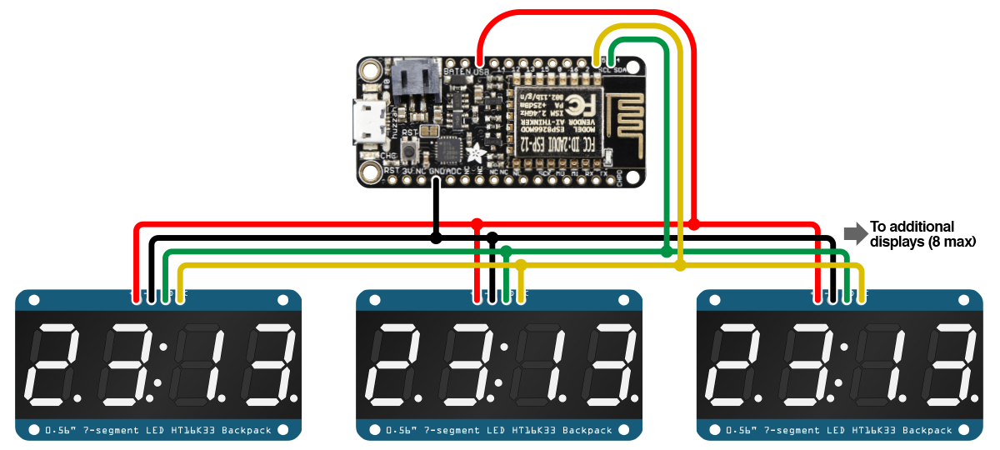
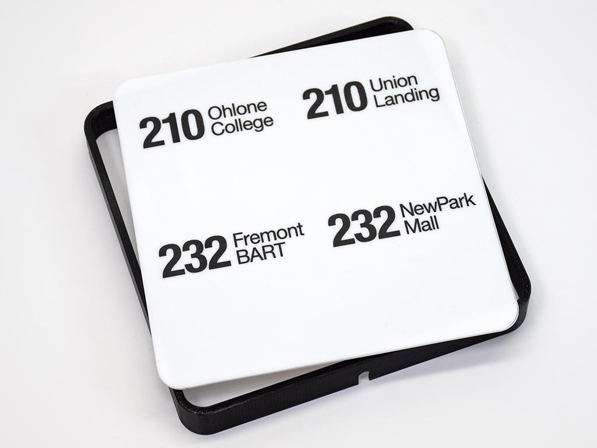

Phillip Burgess wrote a tutorial on the Adafruit Learning System about making a personalized NextBus Transit Clock. This project is very similar to the TrainLight project I wrote about recently, but is implemented in a very different way. Phillip’s tutorial uses 7-segment displays and clear labels for the bus route vs the abstract lights in TrainLight, and doesn’t require a proxy server or the Particle Cloud.
The choice to use clear digits for the wait time makes sense when you look at the project photo above. The routes near Phillip’s home run infrequently, with 30-60 minutes between stops. Bus service like this requires a bit more planning to use, so knowing the actual time to the next bus, and the bus after that is useful.
Electronics
 The NextBus Transit Clock uses the ESP8266 WiFi microcontroller on an Adafruit Feather HUZZAH dev board. This is a few dollars cheaper than a Particle Photon, but doesn’t include access to the Particle Cloud. The ESP8266 can be programmed with a Lua script, or with C++ code using the Arduino IDE. The program must be uploaded through a USB cable and I didn’t see any support for uploading through WiFi. The Feather HUZZAH board has support for using a Lipo battery including a charger circuit which is handy for a portable project, but not used in this case. The ESP8266 has limited GPIO pins, but this project only needs two pins to connect to the displays.
The displays used are the Adafruit 0.56” 4-Digit 7-Segment Display with I2C Backpack, which cost between $10-$12 each depending on the LED color. The backpack takes care of refreshing the LEDs, and all the microcontroller has to do to update the time is send I2C messages telling the backpack what segments to turn on. I2C is a good choice for connecting the backpacks as the four displays can be chained together easily using just two pins from the micro.
Software
TrainLight uses a proxy server to convert the NextBus XML data to JSON. The NextBus Transit Clock skips all this and uses an open source TinyXML Library that runs on the ESP8266, so no external server is required. This is impressive as parsing XML is a challenge with limited memory on a microcontroller, but the TinyXML Library with Phillip’s changes takes care of this.
Phillip made it very easy to customize the sketch. There’s a python script you can run on your computer that prompts you for the transit agency, route number, direction, and stop, then outputs code you can paste directly into the Arduino sketch. The only other config you need to do is change the WiFi network name and password to match your network.
Enclosure
 The tutorial encourages you to customize the enclosure to your needs, but provides all the details of the enclosure Phillip made. The example enclosure uses 3D printing for the back and sides with mounting for the electronics, and laser cut acrylic for the front. The bus route and direction labels were applied to the acrylic using toner transfer paper, which looks nice in the photo and I’m sure looks even better in person.
Suggestions for V2
While Phillip encourages customizing the enclosure to meet your needs, you’re left to figure that out on your own with the reference design requiring a laser printer, 3D printer, and toner transfer kit. I liked the “no tools and low budget” approach that TrainLight took, to make it easy for anyone to reproduce the enclosure.
The NextBus Transit Clock project is a follow-up to another NextBus clock using a Raspberry Pi and a LED matrix. The >$40 spent on four 7-segment backpacks could be used for a 16x32 or 32x32 RGB LED Matrix display instead, which could be used for not only display of transit times, but also more information using text, graphics, or color coding. Phillip designed this clock to be more subdued than his original scrolling matrix transit clock, but a matrix display can be used to present information in a subdued way.
Phillip has a lot of other awesome projects on the Adafruit Learning System, I encourage you to check out what else he has and keep an eye out for his new projects.